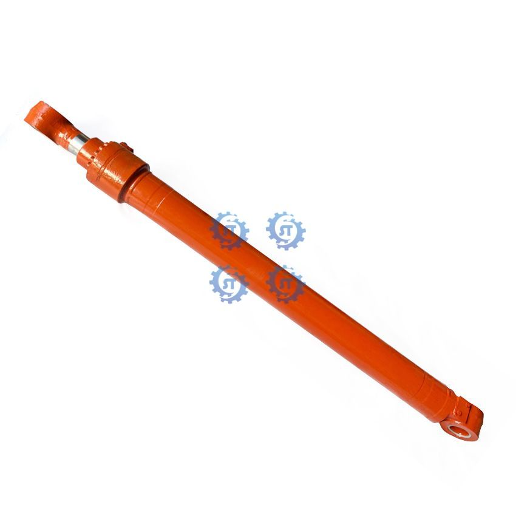
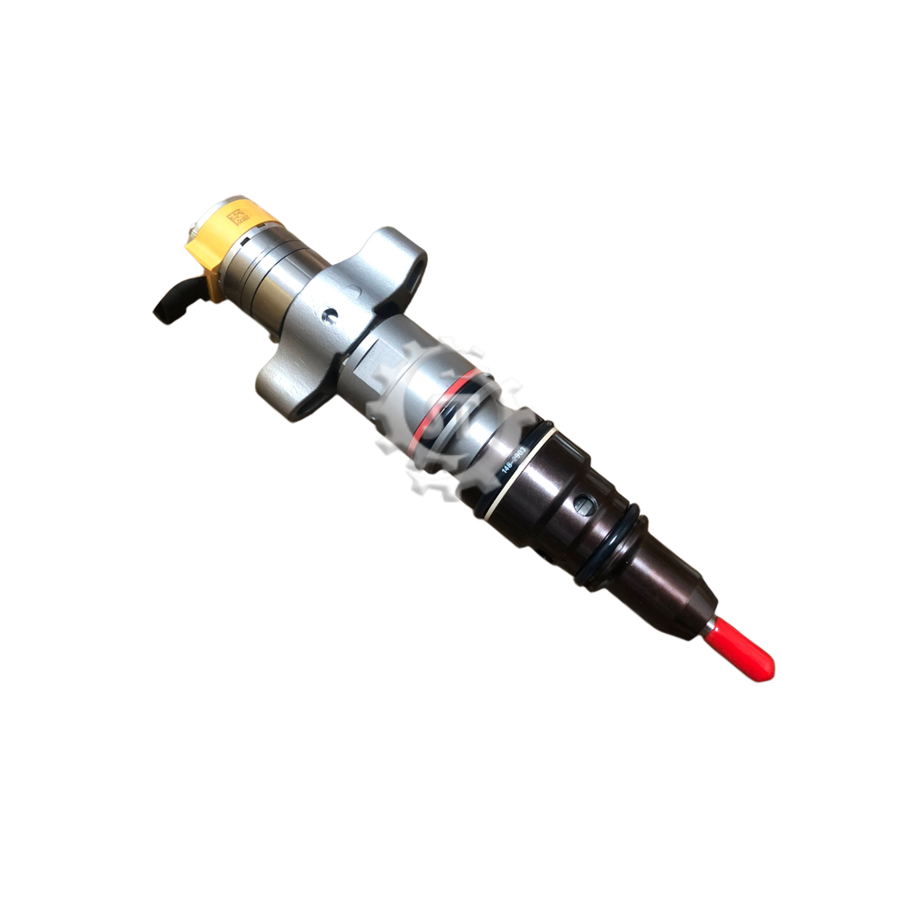
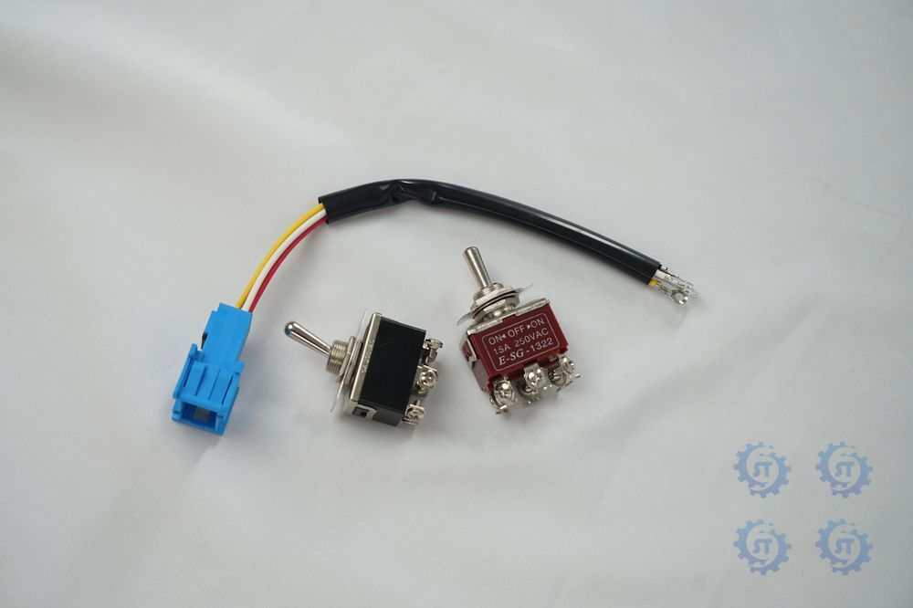
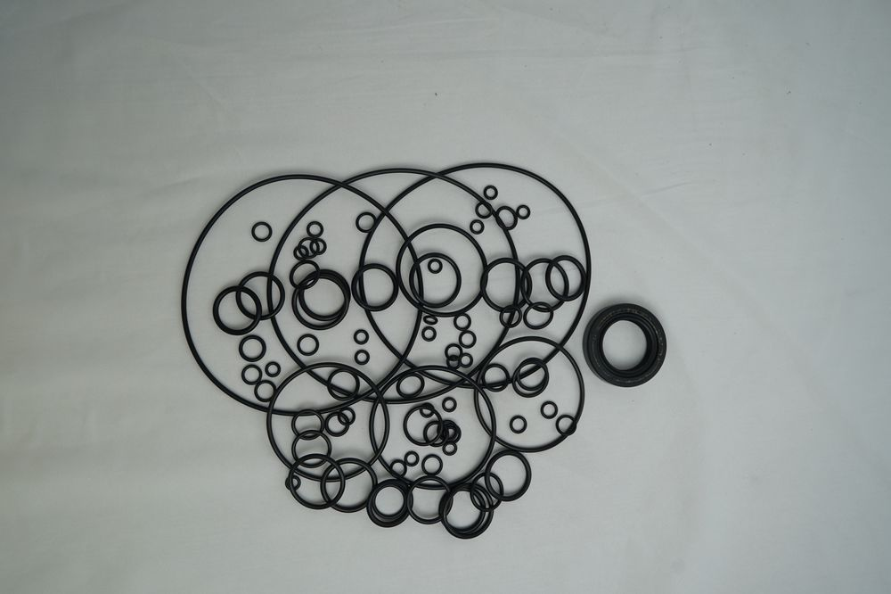
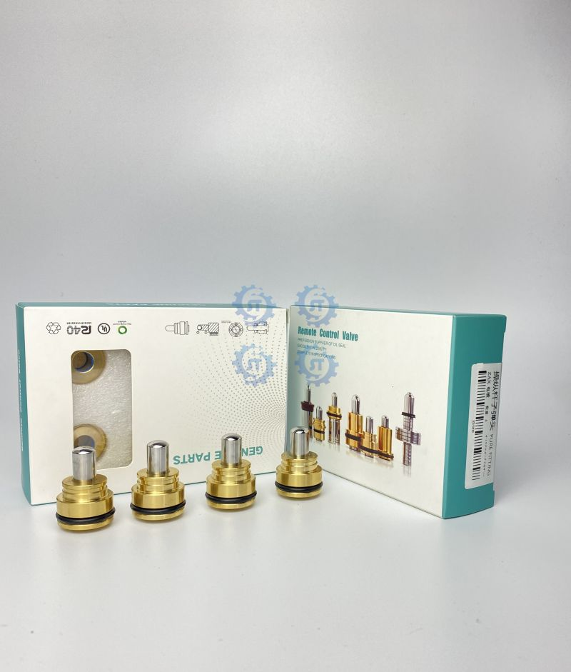

Guangzhou SongTe Engineering Machinery CO., LTD
Genuine Epiroc / Atlas Copco replacement cylinders for surface drill rigs, plus custom boom, arm, bucket and suspension cylinders, center joints, control levers, seal kits, pumps, final drives and engine parts.
Fifteen product categories — click any card to see its parts.
Genuine Epiroc / Atlas Copco replacement cylinders by part number.
View range →
Custom boom, arm and bucket cylinders for all major excavator brands.
View range →
Loader hydraulic cylinders — contact us for your machine model.
View range →
Diesel fuel injectors and nozzle assemblies for excavator engines.
View range →
Hydraulic center swivel joints for all major excavator brands.
View range →
Starter motors, alternators, sensors, relays and wiring harnesses.
View range →

Main pumps, final drives, swing motors and gear pumps.
View range →
Repair seal kits and oil seals for all major excavator brands.
View range →

Joystick pilot control levers for excavator hydraulic control.
View range →What we use in every hydraulic cylinder we build or recondition.
high-strength seamless steel (45# / 40#), honed to mirror finish to reduce friction
45# / 40Cr / 42CrMo carbon steel, induction-hardened with hard chrome plating, surface hardness 45–55 HRC for wear & corrosion resistance
cast iron HT300 or alloy steel for dimensional stability under pressure
bronze or composite to reduce friction and handle lateral load
high-performance elastomers (SKF / NOK / KYB), heat- and oil-resistant
Three steps to reduce the risk of ordering the wrong part.
Send the cylinder part number or machine model. We confirm the matching assembly and any available alternatives.
For custom or unmatched cylinders, share rod diameter, stroke, mounting style or old-cylinder photos. We confirm drawings before production.
Photos, video and inspection reports are arranged per order so you know what you receive before it ships.